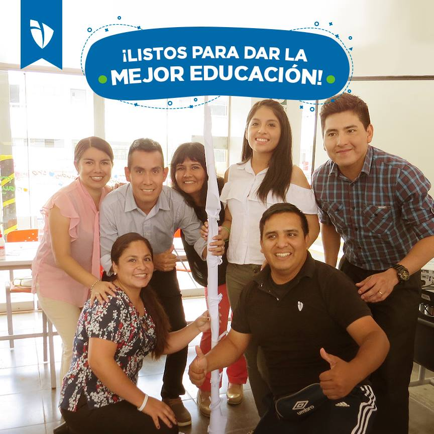

Nuestra historia
Club del Saber nació de una idea sencilla pero poderosa, soy madre de un niño con retraso madurativo leve. Durante mucho tiempo me sentí frustrada porque, a pesar de su esfuerzo, no lograba seguir el ritmo de los contenidos en la escuela. Las materias como lengua y matemáticas se le hacían cuesta arriba, y lo más difícil era ver cómo esa situación afectaba su autoestima y sus emociones. Buscando alternativas, comprendí que lo que él necesitaba no era solo apoyo académico, sino también un acompañamiento emocional que le devolviera la confianza en sí mismo. Así nació la idea del Club del Saber: con la misión de acompañar a niños y niñas en su camino educativo, brindando apoyo escolar con amor, paciencia y creatividad, un espacio donde los niños reciben clases particulares de lengua y matemáticas, pero también encuentran un lugar seguro para expresar sus emociones, aprender a su propio ritmo y descubrir que el conocimiento puede ser una experiencia positiva y motivadora. Hoy, gracias a este proyecto, mi hijo y otros niños han podido avanzar, recuperar la alegría de aprender y sentirse capaces de enfrentar nuevos desafíos. El Club del Saber es la prueba de que, con paciencia, dedicación y cariño, todos los niños pueden crecer y alcanzar su máximo potencial.
¿Quiénes somos?
Somos docentes con vocación, experiencia y pasión por enseñar. Un equipo de profesionales comprometidos con la educación de niños de primaria. Creemos que cada estudiante tiene un potencial único y que, con el acompañamiento adecuado, puede desarrollar sus habilidades académicas y personales. Club del Saber es más que un proyecto: es una comunidad educativa que busca despertar la curiosidad, fortalecer la confianza y cultivar el amor por aprender.
¿Cómo trabajamos?
En Club del Saber ofrecemos clases particulares diseñadas a la medida de cada niño, con clases personalizadas, materiales didácticos y seguimiento constante.
- Diagnóstico inicial: Evaluamos las necesidades y fortalezas de cada estudiante.
- Plan personalizado: Elaboramos estrategias de enseñanza adaptadas a su ritmo y estilo de aprendizaje.
- Metodología activa: Utilizamos juegos, dinámicas y recursos didácticos para que el aprendizaje sea divertido y significativo.
- Seguimiento constante: Mantenemos comunicación con las familias para acompañar el progreso y reforzar los logros.
Nuestro trabajo se centra en que los niños no solo comprendan los contenidos escolares, sino que también desarrollen autonomía, pensamiento crítico y entusiasmo por descubrir.